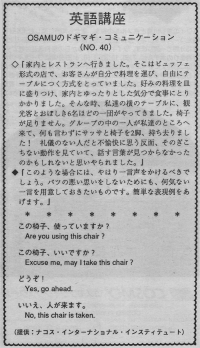

この椅子使っていますか。
Osamu went to the restaurant with his wife. The restaurant was buffet style where the patron could choose their own food. Osamu chose some food, put the food on his plate and started to eat. He felt very relaxed. Then a group of people who seemed like tourists sat next to them. One person from their group came to their table and took two chairs. They felt displeased with such rude people. On the other hand, he couldn’t find the appropriate words to explain their awkward actions.
Of course, if you are not using the chairs, you can’t say anything to rude people. If you were saving it, you could say this:
“Excuse me, we’re expecting two more people.” or
“Excuse me, we’re going to use those two chairs.”
家内とレストランへ行きました。そこはビュッフェ形式のお店で、お客さんが自分で料理を運び、自由にテーブルにつく方式をとっていました。好みの料理を皿に盛りつけ、家内とゆったりした気分で食事にとりかかりました。そんな時、私達の横のテーブルに、観光客とおぼしき６名ほどの一団がやってきました。椅子が足りません。グループの中の一人が私達のところへ来て、何も言わずにサッサと椅子を２脚、持ち去りました！礼儀のない人だと不愉快に思う反面、そのぎこちない動作を見ていて、話す言葉が見つからなかったのかもしれないと思いやられました。
このような場合には、やはり一言声をかけるべきでしょう。バツの悪い思いをしないためにも、何気ない一言を用意しておきたいものです。簡単な表現例をあげます。
この椅子、使っていますか。
Are you using this chair?
この椅子、いいですか。
Excuse me, may I take this chair?
どうぞ！
Yes, go ahead.
いいえ、人が来ます。
No, this chair is taken.

| © 1995-2013 NACOS International Institute. All Rights Reserved. |